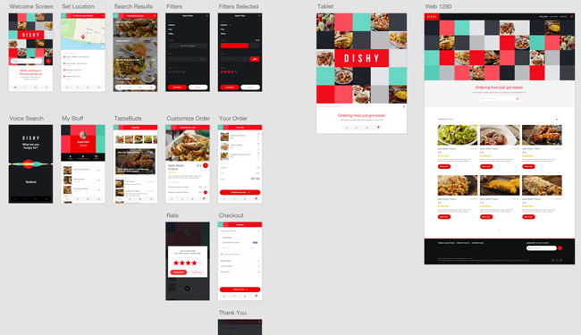

ADOBE XD
pourquoi utiliser adobe xd
Adobe s’est fait un nom depuis très longtemps dans le webdesign grâce à flash (devenu Animate), Dreamweaver, Photoshop, Illustrator ou encore InDesign (et de nombreux logiciels éphémères). Il manquait cependant une corde à l’arc de la firme au A rouge : un véritable logiciel pensé pour le webdesign. Apparu en 2016 pour concurrencer Sketch (sorti en 2010), Adobe XD est un logiciel spécialisé dans le design de sites web qui peut aussi bien servir à l’UI designer (esthétique du site) qu’à l’UX designer (agencement du site). Adobe XD a un avantage par rapport à Sketch : il est gratuit (mais payant quand il s’agit d’utiliser toutes les options proposées en rapport avec le créative cloud), ce qui permet à tous les collaborateurs de l’utiliser, qu’il s’agisse de l’UX/UI designer, du développeur, du chef de projet ou du client.
La première chose qui frappe quand on ouvre le logiciel, c’est la simplicité de son interface : il y a peu de fonctions, on ne garde que l‘essentiel. On pourrait penser qu’Adobe XD est une version simplifiée d’InDesign. Beaucoup plus intuitif dans son utilisation que ce dernier, il est cependant moins riche en effets. Cela se justifie par sa compatibilité avec l’intégration web : on fait une croix sur beaucoup d’effets, car ils ne peuvent s’appliquer naturellement à une interface web. Rien n’empêche cependant de créer/retoucher des images sur d’autres logiciels pour les intégrer ensuite en format JPEG, PNG ou SVG dans un projet Adobe Xd, le logiciel étant justement disposé à les accueillir telles quelles. En bref, un fichier Adobe XD a deux rôles : être la maquette du site et être intégré au site lui-même.
La conception d’une maquette XD se fait en deux parties, il y a tout d’abord la partie « design » qui comprend la création de l’interface du site web. On y intègre les polices, les formes, les couleurs, les icônes et les images, le tout organisé à la façon d’un vrai site internet. La création de l’interface est simple et malléable : on peut s’occuper en même temps de l’interface mobile, tablette et ordinateur, le tout avec de nombreux formats existants (par exemple IPhone 7, tablette Samsung, web 13 pouces…).
Comme la plupart des logiciels d’Adobe, XD possède un système de calques. Celui-ci se rapproche plus du système d’After Effect que celui d’InDesign avec son système de composants (un bloc d’éléments figés et réutilisable à souhait d’un simple clic) qui fait écho aux compositions d’After Effect.
Ce qu’on peut retenir d’Adobe XD après quelques heures d’utilisation, c’est que celui-ci est très compartimenté et demande une certaine rigueur au niveau de l’organisation sous peine de perdre le contrôle de son projet. Il existe cependant sur l’interface du logiciel un onglet permettant de ranger les couleurs, les composants et les caractères afin de pouvoir les modifier simultanément sur tout le projet. Ainsi, vous pouvez passer d’un code couleur rouge et vert à un code couleur bleu et jaune en quelques clics et cela affectera tous les éléments colorés du projet. Il en est de même pour la modification d’un composant ou d’une police de caractère.
Une fois la conception du design terminée, on peut passer à la partie « prototype » qui comprend l’agencement du site. La partie prototypage peut être vue comme l’assemblage d’un train électrique : on assemble le décor, les rails, les wagons et à la fin tout roule dans un circuit harmonieux. Il en est de même avec Adobe XD, une fois le design « terminé » (car les corrections finissent toujours par arriver) il est temps de le faire vivre, de lui donner une cohérence, d’en faire la véritable synthèse d’un site internet. Pour ce faire, Adobe XD propose une interface dédiée à la création de lien entre les différentes pages : ainsi nous pouvons démarrer la construction de notre circuit. La mise en place des liens est très intuitive et propose différentes options : on peut incruster une fenêtre « pop-up » au milieu de la page, changer de page avec une transition en défilement ou en opacité, faire des retours en arrière, faire apparaître une fenêtre quand on glisse le curseur sur un élément, laisser un élément fixe durant le défilement… Les choix ne sont pas nombreux mais on peut reproduire les principales interactions que l’on trouve sur un site web ordinaire, le seul élément manquant étant le système de saut de chapitre (pour le glossaire d’un long article, par exemple. Il y a bien évidemment un système de prévisualisation qui fonctionne en temps réel et qui permet de voir par soi-même la maquette évoluer.
image d'une maquette sur adobe xd CONTACTS:
tel:225 78443295